- CNN은 작은 창(Kernel)을 사진 위에 옮기며 곱해 더해서 Feature Map을 만들고, Pooling으로 크기를 줄여 가요. 같은 Kernel을 모든 위치에 쓰니까(가중치 공유) 파라미터가 사진 크기와 무관해요.
- 블록을 지날수록 공간은 작아지고 채널은 늘어요. "어디에 있나"를 버리고 "무엇이 있나"로 바꾸는 과정이에요.
- 전이학습은 ImageNet으로 미리 배운 ResNet18의 몸통(Backbone)을 얼려 두고, 마지막 Head를 내 클래스 수에 맞게 바꿔 배워요. 필요하면 뒤쪽 층(layer4)부터 작은 lr로 열어요.
본문에는 핵심 코드 한두 줄만 남겼어요.
📦 필요한 패키지
| 패키지 (pip 이름) | 뭐 하는 애? | 코드에서 |
|---|---|---|
torch | Conv2d·Pooling 같은 층, 손실 함수, 학습 루프 (Day9에서 설치) | import torch, from torch import nn, import torch.nn.functional as F |
torchvision | 이미지 폴더 읽기, 변환·증강, 사전학습 모델(ResNet18) | from torchvision import datasets, transforms, from torchvision.models import resnet18, ResNet18_Weights |
Pillow | PNG·JPG 이미지 파일 열기 (ImageFolder가 내부에서 사용) | from PIL import Image |
matplotlib (선택) | 이미지·Feature Map·학습 곡선 그리기 | import matplotlib.pyplot as plt |
🔧 설치 · 확인
python -m pip install pillow matplotlib
python -c "import torch, torchvision; print(torch.__version__, torchvision.__version__); print('CUDA:', torch.cuda.is_available())"torch와 torchvision은 서로 짝이 맞는 버전이어야 해요. 둘 다 pytorch.org 선택기에서 내 환경(CPU/CUDA)에 맞는 명령으로 함께 깔아요. 이미 GPU용 torch가 잘 돌면 덮어쓰지 마세요.Pillow → PIL.이거 어디에 써?
Day9~10의 ANN은 입력을 한 줄로 펴서 모든 칸을 모든 뉴런에 연결했어요. 사진에 그러면 파라미터가 폭발하고, "옆 픽셀끼리 가깝다"는 정보도 사라져요. CNN은 작은 창 하나를 사진 전체에 돌려 쓰니까 파라미터가 적고, 물체가 사진 어디에 있어도 찾아요.
사진 크기를 바꿔 가며 첫 층 파라미터 수를 비교해 보세요.
| 컬러 사진의 첫 층 | 파라미터 수 |
|---|---|
| 펼쳐서 뉴런 128개에 연결 (ANN) | - |
Conv2d(3, 16, 3) (CNN) | - |
16·3·3·3 + 16 = 448로 고정이에요.⓪ PyTorch 한 장 정리 — 데이터 → 예측 → 손실 → 기울기 → 갱신
CNN으로 넘어가기 전에 Day9~10의 학습 흐름을 한 장으로 다시 묶어요. 모델이 ANN이든 CNN이든 이 다섯 단계는 똑같고, 바뀌는 건 "모델 칸" 안쪽뿐이에요. 예시는 PyTorch 공식 한국어 튜토리얼 「파이토치 기본 익히기」의 FashionMNIST(옷 사진 28×28 흑백, 10개 클래스, 학습용 60,000장)예요.
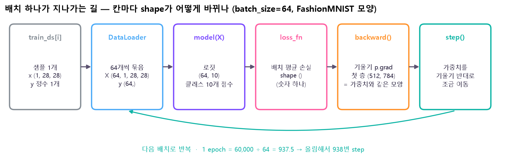
(1, 28, 28)가 DataLoader에서 64개씩 묶여 (64, 1, 28, 28)이 되고, 모델을 지나면 클래스 10개 점수(로짓) (64, 10), 손실 함수를 지나면 숫자 하나 ()가 돼요. backward()는 가중치마다 같은 모양의 기울기를 채우고(첫 층 (512, 784)), step()이 가중치를 옮긴 뒤 다음 배치로 돌아가요. shape는 같은 모양의 텐서를 실제로 모델에 넣어 확인했어요. 🤔 왜 이렇게 나눠 봐? 에러의 대부분은 "칸과 칸 사이 shape가 안 맞아서" 나요. 각 칸의 입·출력 모양을 알면 어디서 틀렸는지 바로 짚을 수 있어요.drop_last=False일 때). batch_size를 키우면 step 수는 줄고, 줄이면 늘어요.pred = model(X); loss = loss_fn(pred, y) # ① 예측 ② 손실
optimizer.zero_grad(); loss.backward(); optimizer.step() # ③ 초기화 ④ 기울기 ⑤ 갱신shape 맞추기 — dim에 적은 축이 사라진다
텐서를 다룰 땐 shape부터 확인해요. 2×3 텐서 [[1, 2, 3], [4, 5, 6]]로 보면:
| 계산 | 어느 방향으로 더하나 | 결과 | 남는 shape |
|---|---|---|---|
sum(dim=0) | ↓ 세로로 (줄 축이 사라짐) | [5, 7, 9] | (3,) |
sum(dim=1) | → 가로로 (칸 축이 사라짐) | [6, 15] | (2,) |
argmax(dim=1)? — 로짓은 (64, 10) = "64장 × 클래스 10개 점수"예요. 사진마다 10개 점수 중 가장 큰 곳을 골라야 하니 클래스 축(dim=1)을 없애야 해요. 그러면 (64,) — 사진마다 답 하나가 남아요. dim=0으로 하면 거꾸로 "클래스마다 가장 높은 사진 번호"가 나와 엉뚱한 값이 돼요.x.flatten(1) # (N, 1, 28, 28) → (N, 784)
pred.argmax(dim=1) # (N, 10) → (N,)데이터 · 모델 · 손실 · 갱신 · 평가 · 저장
| 단계 | 하는 일 | 🤔 왜 이렇게? |
|---|---|---|
| Dataset | "몇 개인지(__len__)"와 "i번째 샘플 1개(__getitem__)"만 알려 줌 | DataLoader가 이 두 가지만 알면 섞기·묶기를 알아서 해 줘요. 데이터 형식이 달라도 이 두 칸만 맞추면 돼요 |
| DataLoader | 64개씩 묶고, 학습 데이터는 epoch마다 섞음 | 한 장씩은 느리고 기울기가 들쭉날쭉, 전부 한 번에는 메모리가 부족 → 미니배치가 중간 |
| 모델 | Flatten → Linear(784, 512) → ReLU → Linear(512, 10) | 앞 층의 출력 수 = 다음 층의 입력 수. ReLU가 없으면 Linear를 여러 층 쌓아도 Linear 하나와 같아요 |
| 손실 | 분류는 CrossEntropyLoss(로짓 + 정수 정답), 회귀는 MSELoss | "얼마나 틀렸나"를 숫자 하나로 만들어야 그걸 줄이는 방향(기울기)을 구할 수 있어요 |
| 갱신 | SGD: p ← p − lr × p.grad / Adam: 가중치마다 보폭 조절 | Adam은 처음 시도하기 무난하고, SGD는 규칙이 단순해서 동작을 이해하기 좋아요(Day10) |
| 평가 | model.eval() + torch.no_grad()로 안 본 데이터 정확도 | 학습 손실은 내려가는데 평가 정확도가 떨어지면 과적합 → epoch 줄이기, Dropout 추가 |
| 저장 | state_dict()(가중치 묶음)만 저장하고, 불러올 땐 같은 구조의 모델에 넣음 | 모델 객체 통째보다 가볍고, 코드가 조금 바뀌어도 불러오기 쉬워요 |
class MyDS(Dataset): # __len__ · __getitem__ 두 개만
DataLoader(ds, batch_size=64, shuffle=True)nn.Module로 모델 정의 명령어 사전에서 자세히 →self.layers = nn.Sequential(nn.Flatten(), nn.Linear(28*28, 512), nn.ReLU(), nn.Linear(512, 10))
def forward(self, x): return self.layers(x)loss_fn = nn.CrossEntropyLoss() # 로짓 그대로 넣기
optimizer = optim.Adam(model.parameters(), lr=1e-3)with torch.no_grad(): hit = model(X).argmax(1) == y # model.eval() 먼저
torch.save(model.state_dict(), "model.pth")자주 하는 실수 4가지
| 실수 | 무슨 일이 생기나 | 🤔 왜? |
|---|---|---|
zero_grad()를 빠뜨림 | 기울기가 배치마다 계속 쌓여 갱신이 점점 커짐 | backward()는 p.grad에 더하는 동작이라, 지우지 않으면 지난 배치 기울기가 남아요 |
CrossEntropyLoss에 softmax 값을 넣음 | 손실이 잘 안 줄고 이상한 값이 나옴 | 이 손실은 안에서 softmax를 한 번 더 해요. 이미 0~1로 눌린 값에 또 softmax를 하니 차이가 뭉개져요 → 로짓 그대로 넣기 |
| 모델과 데이터의 장치가 다름 | RuntimeError: Expected all tensors to be on the same device | GPU에 있는 가중치와 CPU에 있는 데이터는 곱할 수 없어요 → 둘 다 .to(device) |
평가 때 eval()·no_grad()를 빠뜨림 | 점수가 실행할 때마다 흔들리고 메모리를 더 씀 | Dropout이 켜진 채라 매번 다른 칸을 끄고, 쓰지도 않을 기울기 기록까지 남겨요 |
실수 1·2·3을 실제로 저질러 본 결과는 명령어 사전의 "실제로 돌려 보면" 표에 있어요.
파라미터 두 종류
가중치(model.parameters())는 학습이 바꾸는 값, 하이퍼파라미터는 학습 전에 사람이 정하는 값이에요.
| 하이퍼파라미터 | 키우면 | 줄이면 |
|---|---|---|
lr (학습률) | 빨리 움직이지만 발산 위험 | 안정적이지만 느림 |
batch_size | step 수 ↓, 메모리 ↑ | step 수 ↑, 기울기가 들쭉날쭉 |
epochs | 과적합 위험 ↑ | 덜 학습 |
| 은닉 크기 (예: 512) | 표현력 ↑, 과적합 ↑ | 단순한 패턴만 |
① 이미지 Tensor — [N, C, H, W]
| 축 | 뜻 | 예 |
|---|---|---|
| N | 이미지 장수 (batch) | 8 |
| C | 채널 (컬러 RGB = 3, 흑백 = 1) | 3 |
| H, W | 높이, 너비 (픽셀) | 64, 64 |
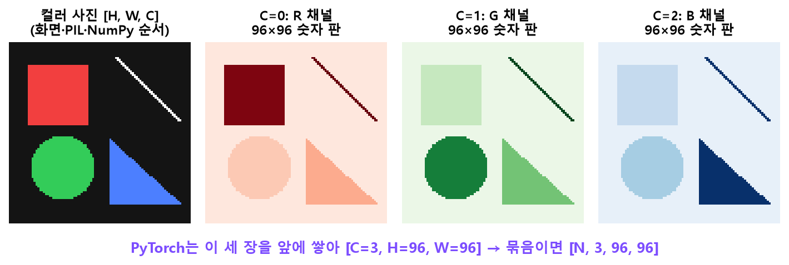
[3, H, W]로 들고, Conv의 Kernel 한 장도 이 3장을 한꺼번에 봐요. 화면에 그릴 땐 픽셀마다 (R,G,B)를 붙여야 하니 [H, W, 3]로 바꾸는 거예요.[1, C, H, W]처럼 "1장짜리 묶음"으로 넣어요.hwc = img.permute(1, 2, 0) # [32, 32, 3] → plt.imshow(hwc)
nchw = img.unsqueeze(0) # [1, 3, 32, 32] → 사진 한 장을 모델에 넣을 때② 합성곱 (Convolution) — 작은 창을 옮기며 곱해 더하기
| 용어 | 뜻 |
|---|---|
| 합성곱 | 작은 창을 옮겨 가며 창 안의 값을 가중합하는 연산. 모든 위치에서 같은 가중치 |
| Kernel (필터) | 합성곱 창 안의 가중치 묶음. 3×3이면 숫자 9개. 학습으로 정해지는 파라미터 |
| Feature Map | Kernel 하나가 사진 전체를 훑어서 만든 결과 지도 ("특징 추출부"의 그 특징) |
| 채널 | Feature Map 한 장 = 채널 하나. 출력 채널 수 = Kernel 개수. RGB 입력이면 Kernel 하나가 3채널을 모두 봄 |
| Stride | 창이 한 번에 건너뛰는 칸 수. 2면 출력이 약 절반 |
| Padding | 가장자리 바깥에 0을 덧대기. 3×3에 padding 1이면 크기 유지 |
| 수용영역 | 출력 한 칸이 원본에서 보는 범위. 층을 쌓고 Pooling을 거칠수록 넓어짐 |
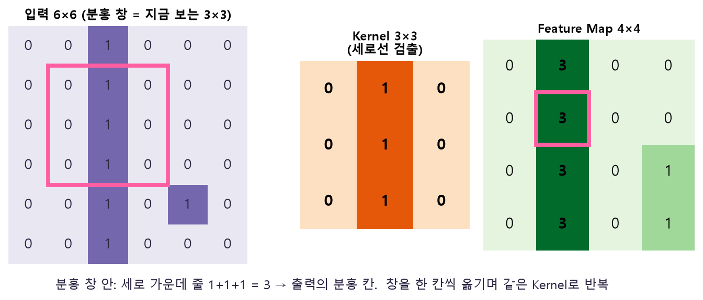
아래에서 직접 해 보세요. 왼쪽 입력 칸을 클릭하면 0↔1이 바뀌고, 오른쪽 출력 칸에 마우스를 올리면 그 칸을 만든 창과 계산이 보여요.
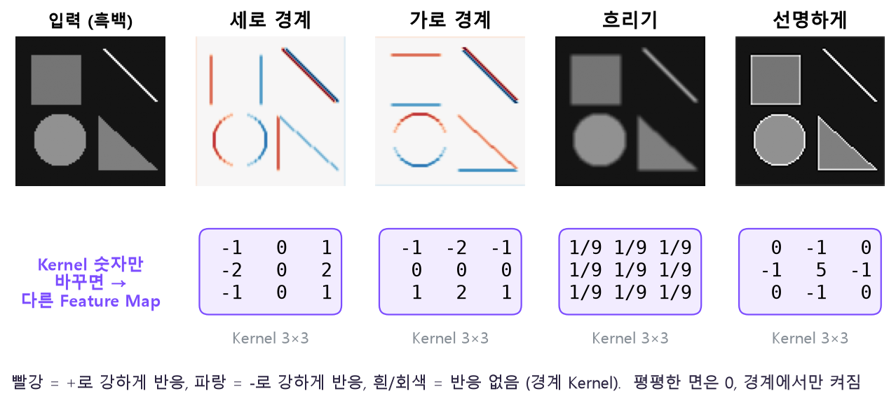
F.conv2d, padding 1)을 한 결과예요. 세로 경계 Kernel은 사각형의 왼쪽·오른쪽 변만, 가로 경계 Kernel은 위·아래 변만 빨강/파랑으로 켜요. 원은 둘 다에서 일부만 켜지고, 흐리기는 경계를 뭉개고, 선명하게는 테두리를 더 밝게 강조해요. 🤔 왜? 세로 경계 Kernel은 "오른쪽 열 − 왼쪽 열"이라 좌우 밝기 차이가 있는 곳(세로 변)에서만 0이 아니에요. 평평한 면은 양쪽이 같아 0이 되죠. 즉 Kernel의 숫자 배치 = "어떤 모양을 찾을지". CNN은 이 숫자 9개를 학습으로 정하고, 출력 채널 수만큼 이런 검출기를 동시에 가져요.공식 세 개
출력 크기 H_out = ⌊(H + 2P − D(K−1) − 1) / S⌋ + 1 (K=Kernel, P=padding, S=stride, D=dilation)
D = 1(기본)이면 ⌊(H + 2P − K) / S⌋ + 1
파라미터 수 = 출력채널 × 입력채널 × K × K + 출력채널(bias)
수용영역 r=1, j=1 에서 시작 → 층마다 r += (K−1)·j, j *= S| 예 | 결과 |
|---|---|
| 32, K3 P1 S1 | 32 (크기 유지) |
| 32, K3 P1 S2 | 16 (절반) |
| 32, K3 P0 S1 | 30 (조금 줄어듦) |
| 수용영역: Conv3 → Pool2 → Conv3 → Pool2 | 3 → 4 → 8 → 10칸, Global Pool에서 전체 |
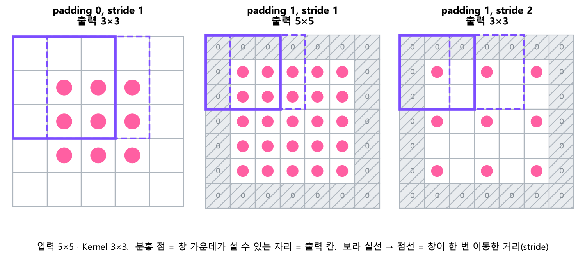
⌊(H + 2P − K)/S⌋ + 1은 이 점 개수를 세는 식이에요.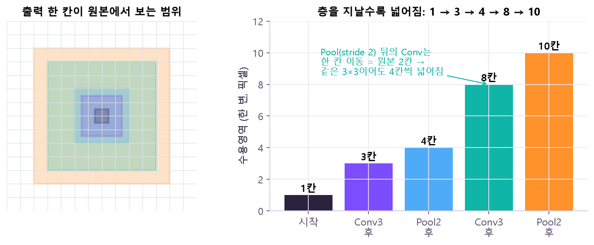
r += (K−1)·j, j=2). 그래서 앞쪽 층은 선·점 같은 작은 패턴, 뒤쪽 층은 모서리·부품 같은 큰 패턴을 봐요.nn.Conv2d 명령어 사전에서 자세히 →conv = nn.Conv2d(3, 8, 3, padding=1)
print(conv(x).shape) # torch.Size([4, 8, 32, 32])③ Pooling · BatchNorm · 작은 CNN 조립
Pooling은 작은 영역을 대표값 하나로 줄여요. MaxPool2d(2)는 2×2에서 제일 큰 값 하나 → 크기가 절반. 채널마다 따로 하니까 채널 수는 그대로예요.
[1 4]
[2 3] → MaxPool 2×2 → 4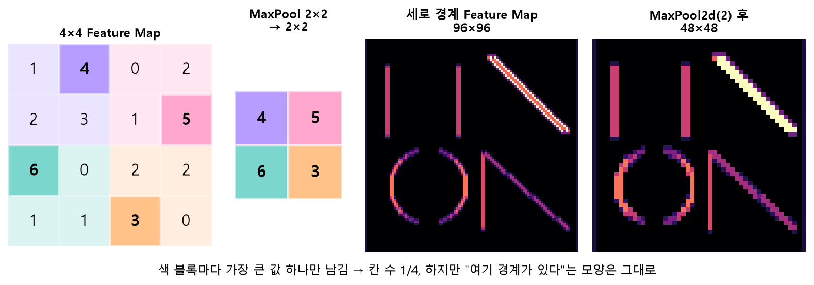
MaxPool2d(2)로 줄인 것(48×48). 칸은 1/4로 줄었는데 사각형의 두 세로 변, 원의 좌우, 대각선이 그대로 알아볼 수 있어요. 🤔 왜 모양이 안 망가져? Feature Map에서 큰 값 = "여기 그 패턴이 있다"는 신호예요. 2×2 안에서 제일 강한 신호만 남기면 "이 근처에 경계가 있다"는 사실은 보존되고, 정확히 몇 번째 픽셀인지만 흐려져요. 그래서 계산은 줄고, 물체가 1픽셀 움직여도 결과가 덜 흔들려요.Conv 블록 하나 = Conv(패턴 찾기) → (BatchNorm) → ReLU(음수 지우기) → MaxPool(크기 절반). 블록을 반복해요.
[N,3,64,64]→ Conv 블록 × 2
특징 추출부(Backbone)→ Global Avg Pool
[N,32,1,1]→ flatten
[N,32]→ Head Linear
[N,K] 점수(logit)
공간은 64 → 16 → 1, 채널은 3 → 32. "어디에 있나"를 점점 버리고 "무엇이 있나"로 바꾸는 과정이에요. 큰 모델(VGG·ResNet)도 같은 모양이에요.
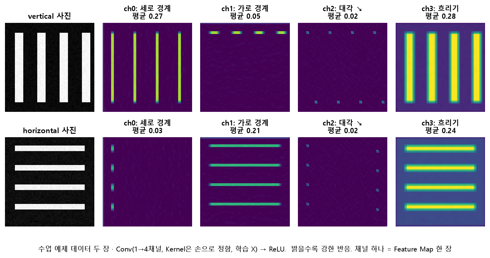
vertical, horizontal 폴더) 사진 두 장을 Conv(1→4채널) + ReLU에 넣은 결과예요. 줄마다 오른쪽 4장이 채널 4개 = Feature Map 4장. 세로 줄무늬 사진은 ch0(세로 경계)이 밝고(평균 0.27), 가로 줄무늬 사진은 ch1(가로 경계)이 밝아요(0.21). ※ Kernel은 이해를 돕기 위해 손으로 정한 값이고 학습된 게 아니에요. 🤔 왜 이게 분류로 이어져? 마지막에 Global Avg Pool이 채널마다 평균 하나만 남기면 [ch0 0.27, ch1 0.05, …] 같은 짧은 숫자 줄이 돼요. 이 숫자만 봐도 세로/가로를 가를 수 있죠. 학습은 이런 "잘 갈라 주는 Kernel"을 스스로 찾는 과정이에요.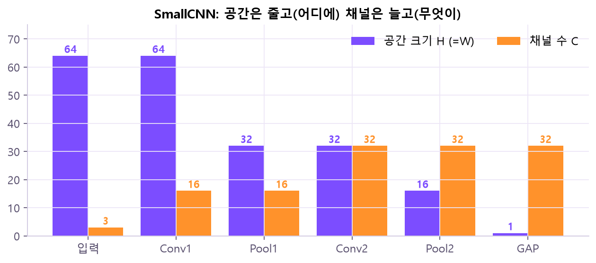
nn.Conv2d(3, 16, 3, padding=1), nn.ReLU(), nn.MaxPool2d(2),
self.pool = nn.AdaptiveAvgPool2d(1) # Global Avg Poolnn.BatchNorm2d (ResNet18엔 있고, SmallCNN엔 없음) 명령어 사전에서 자세히 →nn.Conv2d(3, 16, 3, padding=1, bias=False),
nn.BatchNorm2d(16), # 채널 수와 같아야 함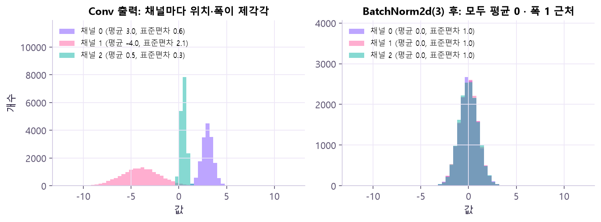
BatchNorm2d(3)(train 모드)를 지나면(오른쪽) 세 채널이 모두 평균 0 · 표준편차 1로 거의 겹쳐요. 🤔 왜 좋아? 다음 층 입장에선 채널마다 "숫자 단위"가 제각각이면 어떤 가중치는 크게, 어떤 건 작게 움직여야 해서 하나의 lr로 맞추기 어려워요. 단위를 맞춰 주면 같은 lr로 모두 고르게 배울 수 있어요. (실제 BN은 이 뒤에 채널별로 배우는 크기 γ·위치 β를 다시 곱하고 더해요.)④ 이미지 읽기 · 증강 · 학습 · 평가 · 저장
ImageFolder — 폴더 이름이 곧 라벨
data/
├─ train/
│ ├─ cat/ ← 고양이 사진들 → 라벨 0
│ └─ dog/ ← 강아지 사진들 → 라벨 1
├─ valid/ (같은 구조)
└─ test/ (같은 구조, 모든 선택이 끝난 뒤 한 번만)하위 폴더 이름을 정렬해서 0, 1, 2…를 붙여요. 결과는 class_to_idx로 꼭 확인해요.
horizontal, vertical)가 그대로 라벨이 되는 흐름이에요. 이름을 알파벳 순으로 정렬해 horizontal = 0, vertical = 1. 사진 한 장은 transform을 거쳐 Tensor가 되고 그 폴더 번호와 짝지어져요. 🤔 왜 정렬해? 컴퓨터가 폴더를 읽는 순서는 운영체제마다 다를 수 있어요. 정렬해 두면 어느 컴퓨터에서든 같은 번호가 붙어요. 대신 폴더 이름을 바꾸면 번호도 바뀌니 class_to_idx를 꼭 같이 저장해요.train_ds = datasets.ImageFolder("data/train", transform=transform)
train_loader = DataLoader(train_ds, batch_size=32, shuffle=True)증강(augmentation)은 train에만
뒤집기·살짝 회전·밝기 변화처럼 라벨이 안 바뀌는 변환으로 데이터를 늘려서 과적합을 줄여요.
transforms.Compose (train만) 명령어 사전에서 자세히 →train_tf = transforms.Compose([
transforms.Resize((64, 64)),🤔 왜 valid엔 안 해? — valid는 모델을 고르는 잣대라서 매번 같은 결과가 나와야 해요. 무작위 변환을 넣으면 같은 모델도 실행마다 점수가 흔들려 공정하게 비교할 수 없어요.
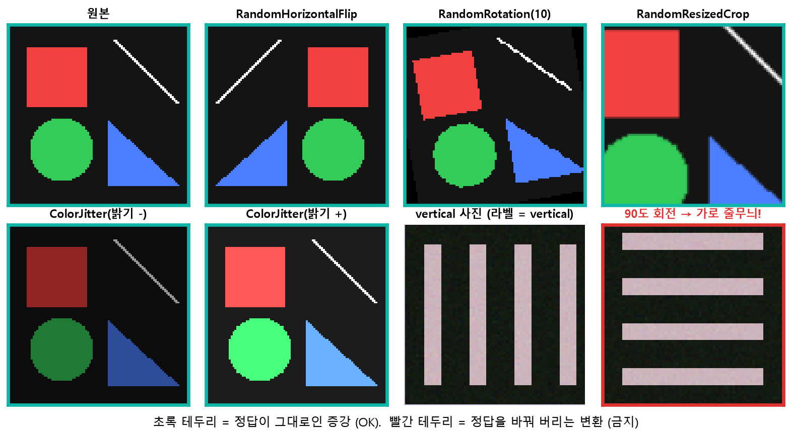
vertical 사진을 90도 돌린 것 → 가로 줄무늬가 돼서 정답이 바뀌어요. 🤔 왜 이게 과적합을 줄여? 모델 입장에선 매 epoch 같은 사진이 조금씩 다르게 보이니 "왼쪽 위 픽셀이 빨갛다" 같은 우연한 배치를 외울 수 없고, 어떤 변형에도 남는 특징(모양·질감)을 써야만 맞힐 수 있어요.loss_fn = nn.CrossEntropyLoss() # softmax 전 logit을 그대로 넣음
best_loss, best_epoch, best_state = vl, epoch, copy.deepcopy(model.state_dict())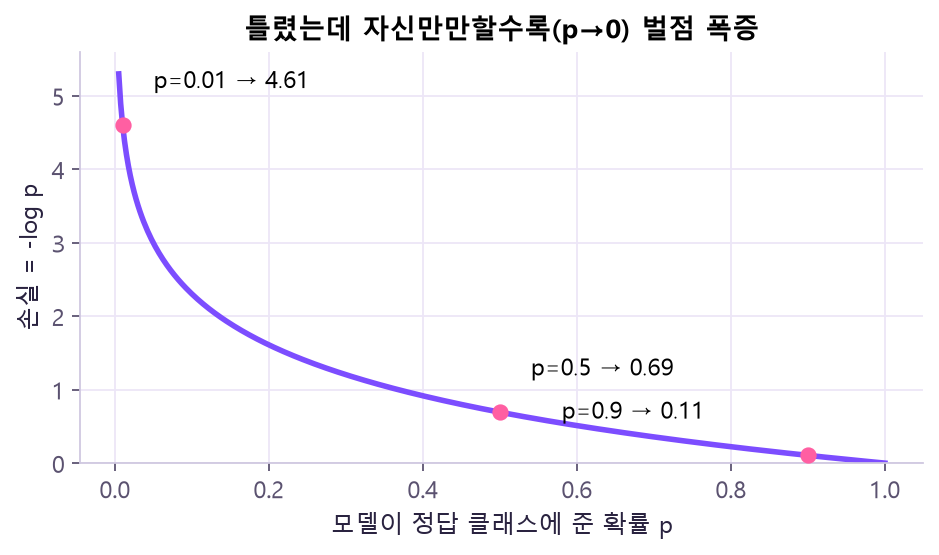
torch.save({"state_dict": best_state, "class_to_idx": train_ds.class_to_idx, ...}, "best_model.pt")
ckpt = torch.load("best_model.pt", weights_only=True)⑤ 전이학습 — 이미 공부한 뇌 빌려 쓰기
데이터가 많은 관련 작업(ImageNet, 1000클래스)으로 미리 학습한 모델에서 마지막 층(Head)을 떼고 내 클래스 수 K에 맞는 새 층을 붙여요. 본체(Backbone)를 고정하고 새 층만 배우거나, 일부·전체를 작은 lr로 미세조정해요.
| ResNet18 구간 (224×224 입력) | 출력 | 처음부터 | Head-only | Partial | 전체 미세조정 |
|---|---|---|---|---|---|
| conv1 + pool | 64ch · 56×56 | 무작위 | 고정 | 고정 | 학습 (작은 lr) |
| layer1 | 64ch · 56×56 | 무작위 | 고정 | 고정 | 학습 |
| layer2 | 128ch · 28×28 | 무작위 | 고정 | 고정 | 학습 |
| layer3 | 256ch · 14×14 | 무작위 | 고정 | 고정 | 학습 |
| layer4 | 512ch · 7×7 | 무작위 | 고정 | 학습 lr 1e-4 | 학습 |
| fc (Head) | 512 → K | 무작위 | 학습 lr 1e-3 | 학습 lr 1e-3 | 학습 |
| 방법 (K=2) | 학습하는 파라미터 수 |
|---|---|
| Head-only | 512×2 + 2 = 1,026 |
| Partial (layer4 + Head) | 8,393,728 + 1,026 = 8,394,754 |
| 전체 미세조정 | 11,177,538 |
| (비교) SmallCNN 처음부터 | 5,154 |
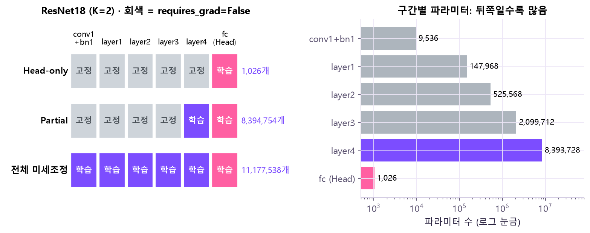
resnet18(weights=None)로 구조만 만들어 직접 센 값, 위 표와 같아요). Head-only는 분홍 칸 하나(1,026개)뿐, Partial은 layer4를 열자마자 839만 개로 뛰어요. 🤔 왜 layer4 하나가 이렇게 커? 파라미터 수는 입력채널 × 출력채널 × 3 × 3이라 채널 수의 제곱으로 커져요. layer4는 512채널이라 64채널인 layer1보다 수십 배 많아요(가로축이 로그 눈금이라 막대 한 칸 = 10배). 그래서 "조금만 더 열어 볼까"도 학습량·과적합 위험이 확 늘어요 → 작은 lr이 필요한 이유.model = resnet18(weights=weights)
model.fc = nn.Linear(model.fc.in_features, 2) # 2) Head 교체 (고정 코드 뒤에!){"params": model.layer4.parameters(), "lr": 1e-4}, # 열어 준 층은 작게
{"params": model.fc.parameters(), "lr": 1e-3}, # 새 Head는 크게⑥ CPU·GPU 속도 비교 · 성능표 — 공정하게 재기
모델은 그대로, 계산 장소만 바꿔서 비교해요. 데이터 · batch · 모델 · epoch를 똑같이 고정해요.
| 규칙 | 🤔 왜? |
|---|---|
| 워밍업 후에 재기 | 첫 실행엔 초기화·메모리 준비 시간이 섞여서 유난히 느려요 |
GPU는 torch.cuda.synchronize() 전후로 | GPU는 비동기라 명령만 던지고 파이썬은 바로 다음 줄로 가요 → 끝날 때까지 기다려야 진짜 시간 |
| 처리량 = 이미지 수 ÷ 초 (images/s) | batch·데이터 크기가 달라도 비교 가능 |
| Peak VRAM도 기록 | 빨라도 메모리가 모자라면 못 돌려요 |
GPU가 없으면 N/A + 사유 | 안 잰 걸 0으로 채우면 "0초 = 엄청 빠름"으로 오해돼요 |
torch.cuda.synchronize()
seconds = time.perf_counter() - start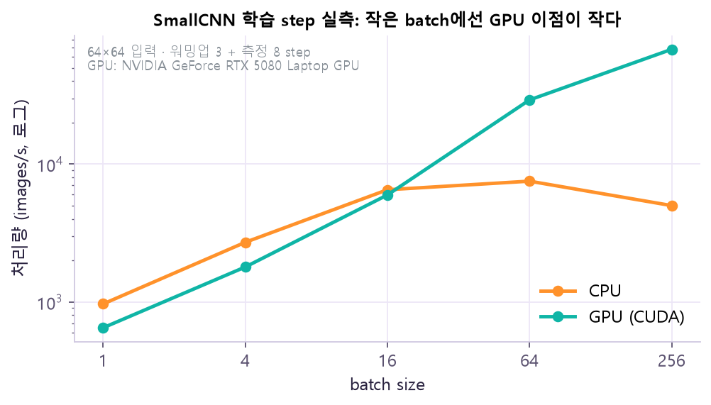
synchronize 포함). batch 1에서는 CPU와 GPU가 거의 같지만(약 800 images/s), batch 256에선 GPU가 CPU보다 10배 이상 빨라요. CPU는 batch 16쯤에서 이미 한계에 닿아요. 🤔 왜? GPU는 수천 개의 작은 계산기를 동시에 돌리는 장치라, 일감이 적으면 대부분 놀고 "명령 띄우기·데이터 옮기기" 고정 비용만 남아요. batch가 커져야 계산기들이 다 일을 해서 진짜 속도가 나와요. 숫자는 장치마다 다르니 내 환경에서 다시 재야 해요.증상으로 진단
| 이런 일이 생기면 | 의심할 것 |
|---|---|
| Conv2d에서 채널 오류 (expected 3 channels …) | 입력이 [N,H,W,C] 순서이거나 흑백(1채널). permute·convert("RGB") 확인 |
| 모델에 사진 한 장 넣었더니 차원 오류 | batch 축 없음 → unsqueeze(0) |
| DataLoader가 PIL 이미지를 못 묶음 | ImageFolder에 transform(ToTensor) 안 줌 |
| 라벨 번호가 예상과 다름 | 폴더 이름 정렬 순서 → class_to_idx 확인 |
| valid 정확도가 실행마다 흔들림 | valid에 무작위 증강을 넣음, model.eval() 누락 |
| 전이학습 성능이 이상하게 낮음 | weights.transforms() 안 씀, Backbone BN이 train 모드, Head를 고정 코드보다 먼저 교체 |
| 학습 파라미터 수가 1,026보다 훨씬 큼 | requires_grad = False가 안 됨 |
| GPU 시간이 비정상적으로 짧음 | torch.cuda.synchronize() 없이 잼 |
원본 자료
- ⚠️ Day11 강의 본편 PDF는 받지 못했어요. 이 페이지는
Day11_개념지도.pdf(1쪽, 강의 PDF 쪽수 표기 포함)를 기준으로, 그 범위에 맞는 표준 CNN 이론으로 정리했어요. 본편 PDF가 생기면 다시 대조할 예정이에요. - 개념지도의 개념 정의 출처: Prince, Understanding Deep Learning (MIT Press, 2023) 10장(합성곱)·9.3(전이학습·증강)·11.4(BatchNorm)
- ⓪ PyTorch 한 장 정리:
PyTorch_치트시트.pdf(1쪽, PyTorch 한국어 튜토리얼 「파이토치 기본 익히기」 기준, 2026-11-02). 그림·사전의 숫자는 FashionMNIST와 같은 모양의 합성 데이터로 직접 실행한 값이에요(데이터 내려받기 없음). - 참고: 같은 날짜의
20261102_2.pdf(104쪽)는 Day12(순서 모델) 강의 자료라 Day12에 반영돼 있어요. - 공식 문서: nn.Conv2d · nn.BatchNorm2d · ImageFolder · ResNet18 · 가중치 · 전처리 · 전이학습 튜토리얼